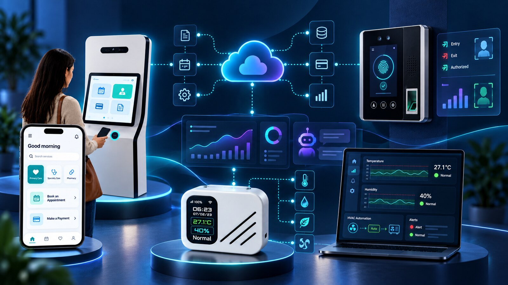
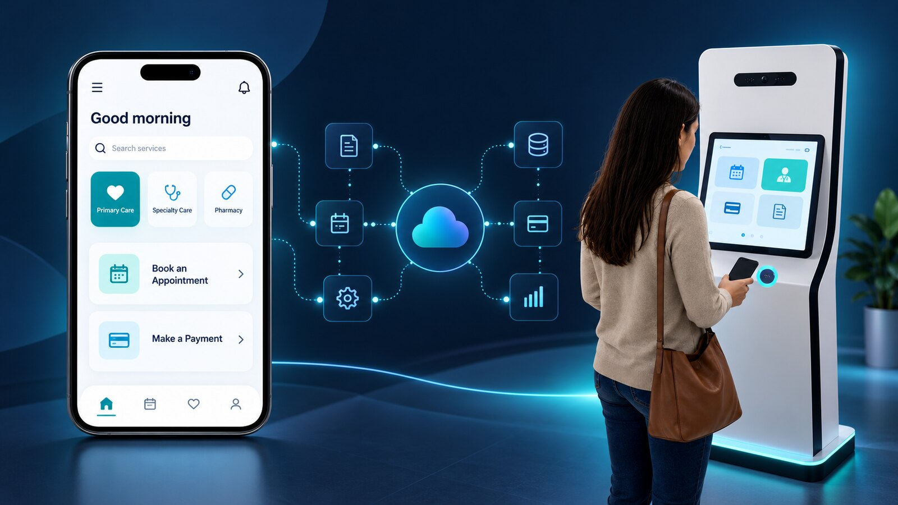
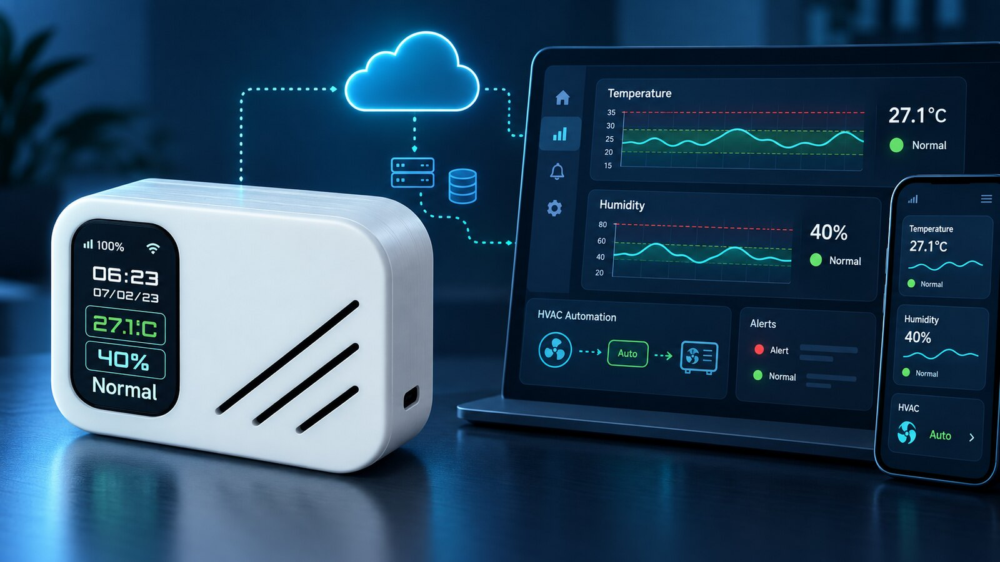
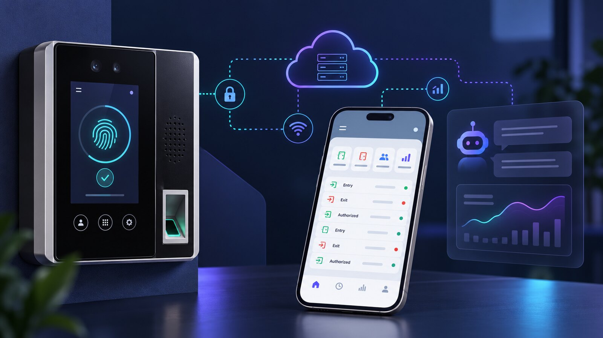

Backend and APIs
Typed services, REST APIs, authentication, business rules, microservices, and integration layers.
- NestJS
- Node.js
- TypeScript
- Python
- Express
Full-Stack Developer · Backend focused
I develop web and mobile experiences, NestJS and Python backends, cloud workflows, AI integrations, and IoT systems—grounded in Mechatronics Engineering.
Medellin, Colombia · UTC-5 · Remote collaboration

About
I am a backend and automation developer and technical lead who can move from the user interface to the API, data model, cloud workflow, and connected device.
My Mechatronics Engineering background helps me see software as part of a larger operational system. I focus on reliable integrations, clear failure handling, traceability, usable interfaces, and maintainable delivery.
Capabilities
Six connected disciplines used to deliver complete, production-minded solutions.
Typed services, REST APIs, authentication, business rules, microservices, and integration layers.
Responsive operational dashboards and role-oriented interfaces that connect cleanly to backend services.
Cross-platform mobile experiences for appointments, documents, transactions, and self-service workflows.
Stateful workflows connecting APIs, legacy software, payment services, webhooks, and operational teams.
Event-driven AWS services, relational data, audit trails, and controlled LLM integrations for real workflows.
Sensors, edge controllers, telemetry, alerts, actuators, prototyping, and field implementation.
How I think
I design the boundaries between layers—not only the individual components. That means authentication, data ownership, retries, observability, and user recovery paths are considered from the start.
Representative architecture based on my full-stack, automation, cloud, and IoT work.
Selected work
Sanitized case studies: no production credentials, customer data, patient information, private endpoints, or proprietary source code.

Healthcare automation · Full stack
A patient-facing flow that coordinates same-day appointment validation, legacy-system automation, digital copay collection, webhook confirmation, and transaction evidence.

IoT · Cloud · Automation
Distributed temperature and humidity monitoring with five-minute telemetry, device health, alerts, reports, and safe schedule or threshold-based control.

Applied AI · Data · Security
A conversational layer for authorized operational questions, backed by validated read-only queries, restricted scope, role-based access, and audit logs.
Product breadth
I have worked on multi-role digital products where users interact through responsive dashboards, mobile applications, self-service kiosks, and operational consoles while backend services coordinate identity, data, transactions, and devices.
Public code
Public repositories that demonstrate full-stack delivery, API design, security, data modeling, and operational tooling.
Vacancy and candidate workflows with role-based experiences, authentication, API documentation, relational data, and a containerized environment.
Invoice and transaction management with normalized PostgreSQL data, PostgREST, CSV ingestion, and reconciliation-oriented reporting.
A NestJS service centered on authentication, role-based permissions, business rules, persistence, automated tests, and API documentation.
Experience
Professional delivery across software, automation, IoT, and technical education.
Ingeniot S.A.S.
Backend automation, cloud integrations, payment workflows, operational data, IoT systems, and coordination of a four-person technical team.
Corporacion Ingenios
IoT river monitoring, early-warning systems, rural solar and alarm infrastructure, field implementation, and end-user training.
Freelance and community projects
Robotics, electronics, Arduino, prototyping, 3D design, programming instruction, and practical problem-solving workshops.
Institucion Universitaria ITM · Ninth semester
Engineering foundation spanning automation, electronics, mechanics, control, programming, and technical system design.
Let’s connect
I am open to remote full-stack, backend, automation, integration, AI, and IoT opportunities with teams building useful products.